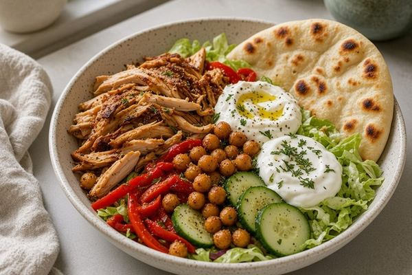
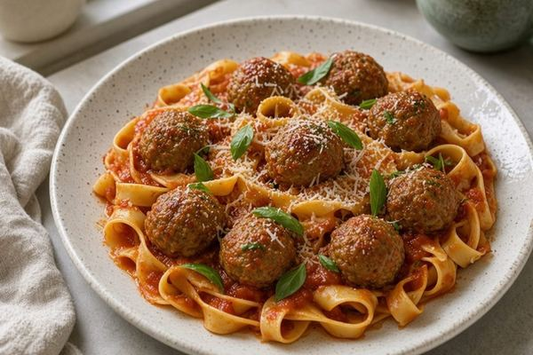
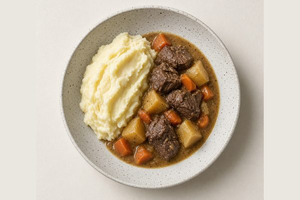
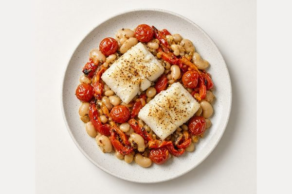

Cookbook
9 recipes so far. What we've cooked, what we thought, and notes for next time.
Favourites
All recipes
More filters
-

Roast chicken
About 1 hr 45 min (40 min hands-on). British roast. On this week's menu.
Not rated yet
-

-

-

Lamb and carrot meatballs in tomato sauce
Sunday: 30 min to roll and bake. Italian pasta.
Not rated yet
-
Gochujang pork shoulder stew
Sunday: 15 min hands-on, 1 hr 15 min simmer. Korean stew.
Not rated yet
-

One-pot chicken
25 min hands-on, on the table in about 45 min. Italian pasta. On this week's menu.
Not rated yet
-

-

-

Baked cod
15 min hands-on, about 20 min in the oven. Spanish traybake. On this week's menu.
Not rated yet
Nothing matches those filters.
Saved on this phone.